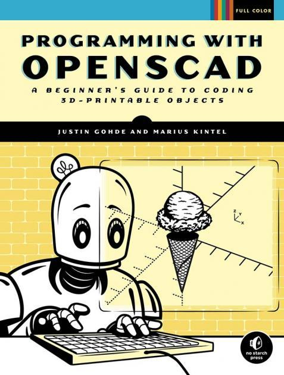
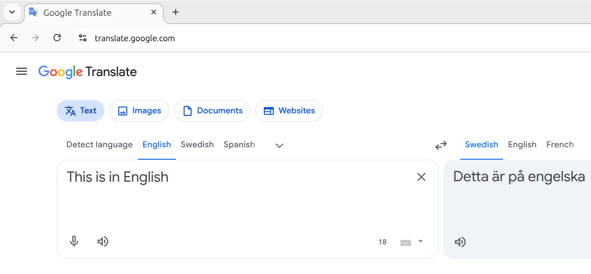
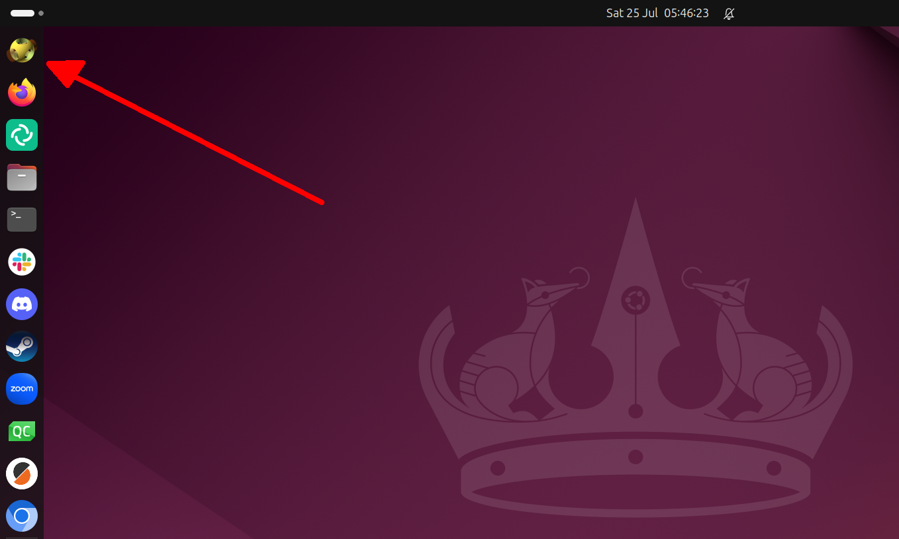
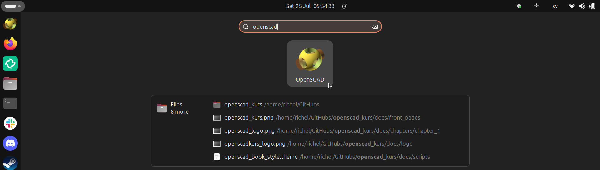
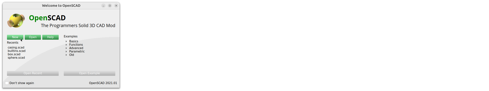
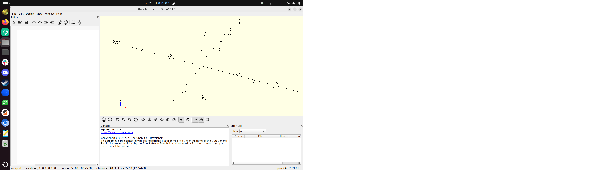
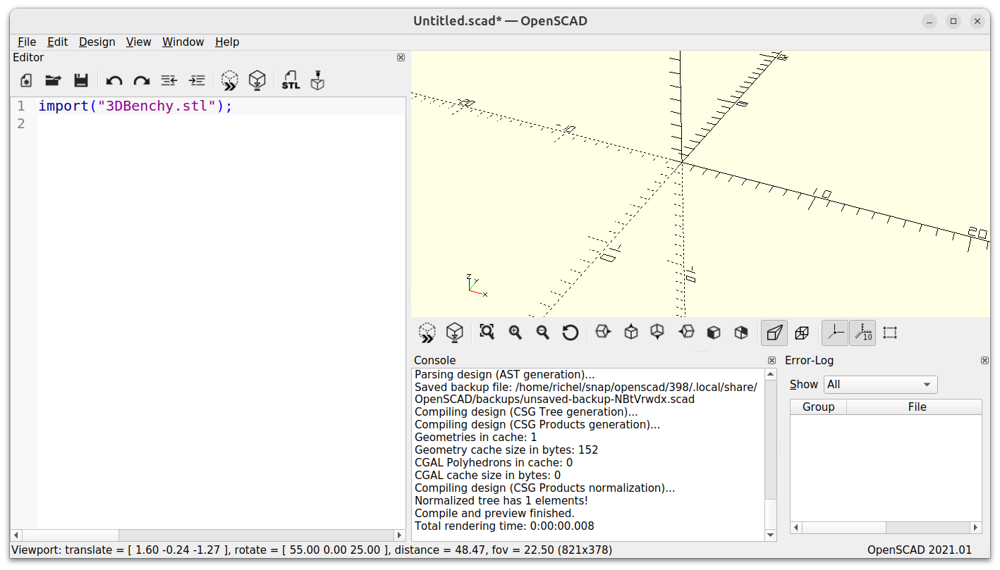
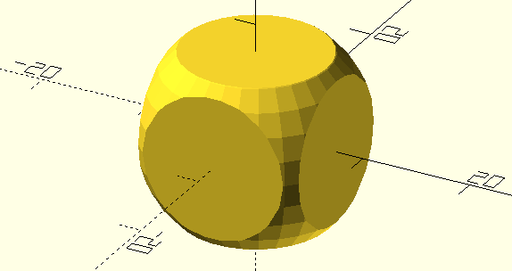
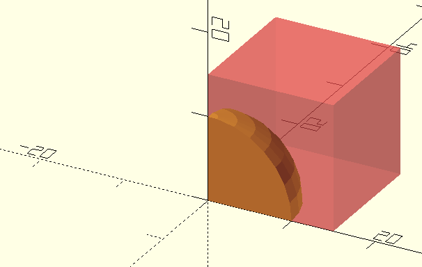

1. Introduktion och 3D ritning med OpenSCAD¶
I det här kapitlet lär vi oss grunderna i OpenSCAD. Vi följer kapitel 1 i boken 'Programming with OpenSCAD' av Justin Gohde och Marius Kintel.

1.1. Att läsa Engelska¶
Boken är på Engelska. Om du behöver översätta ord till svenska, är Google Translate en bra webbsida:
I en webläsare (t.ex. Firefox, Chrome, Chromium, Edge, Opera)
surfa till https://translate.google.com (det räcker
med att skriva translate.google.com).
Välj språk och dina meningar blir översatta:

1.2. Att öppna OpenSCAD¶
Om du använder våra kursdatorer, kan du hitta OpenSCAD ikonen på skrivbordets vänstra sida:

Klicka på ikonen och OpenSCAD startar.
Om det inte finns någon OpenSCAD ikon:
- Tryck på Windows tangenten
- Klicka på 'Type to search'
{kind=link}
- Skriv ner
openscadoch klicka på OpenSCAD ikonen

1.3. Att starta en ny ritning i OpenSCAD¶
Om du får den 'Welcome to OpenSCAD' föster, klicka på 'New':

Nu kan du skapa 3D modeller i OpenSCAD:

1.3. Vad är OpenSCAD?¶
Av kapittel 'Introduction' i boken, läs början och paragraf
'What is OpenSCAD?', på sidorna xv (Romerska 15) och xvi (Romerska 16).
Hur uttalar man 'OpenSCAD'?
1.3. Svar¶
På Engelska: 'Open-S-CAD', på svenska: 'open-S-katt'.
1.4. Vad är 3D punkter och koordinater?¶
Om du har aldrig hört talas om koordinater,
I kapitel 'Introduction' i boken,
läs hela paragrafen 'A brief introduction to 3D design with OpenSCAD',
på sidorna xxii (Romerska 22) och xviii (Romerska 23).
Se Figur 1 på sidan xxii:
- Vilken koordinater har origo (origo är punkten där X, Y, Z axlarna möts)
- Hur uttalar man koordinaterna för origo?
- Varför har koordinater tre siffror?
- Vilka koordinater har punkten P?
- Hur läser man koordinaten för P på svenska? Envänd ord som 'åt höger', 'åt vänster', 'uppåt', neråt', usw.
- Vilket koordinat har punkten 5 vänster av P?
1.4. Svar¶
- Koordinaten är
(0,0,0) - Det uttalas som 'noll komma noll komma noll'
- För att 3D har tre riktningar: X, Y och Z (Se figur 1).
- Koordinaten för P är
(3,0,5) (3,0,5)uttalar man på svenska som: '3 i x-led, noll i y-led och 5 i z-led.- Koordinaten 5 vänster av P är
(-2,0,5)
1.5. Att rita en kub¶
I kapitel 1 '3D drawing with OpenSCAD', läs sidorna 1 till 3,
till (och inklusive) 'Drawing Cuboids with cube.
Kör koden i OpenSCAD.
- Hur läser man på svenska
cube([5, 10, 20]);? - Vad betyder semicolon (
;)? Tips: vilken tecken använder människor i skrift istället? - Vad betyder den hakparenteser (
[och])? Tips: vad heter stället där en av hörnar av kuben? - Ändra koden till
cube(5);. Hur uttalar man på svenska vad koden gör?
1.5. Svar¶
- På svenska läser man
cube([5, 10, 20]);som: 'Kära dator, rita gärna ut en kub som är 5 lång, 10 bred och 20 hög' - Semikolon i OpenSCAD (
;) betyder att satsen är slut och värdet fastställt. - Hakparenteserna betyder att detta är en koordinat. Ett av hörnen på kuben har koordinaten `(5, 10, 20).
- På svenska uttalar man
cube(5);som kära dator, rita ut en kub med alla sidor 5'
1.6. Att rita sfärer¶
Läs sidor 3-4, 'Drawing Spheres with sphere'.
Kolla på första koden:
Texten säger att sfärens radie är 10.
- Vad är svenska översättning av engelska 'radius'?
- Vad är detta?
- En annat sätt att beskriva storleken på en sfär är att använda ordet 'diameter'. Vad är detta?
1.6. Svar¶
- Engelska 'radius' är 'radie' i svenska
- Det är distansen mellan sfärens centrum och kanten.
- Diametern är distansen mellan ena sida till andra sida av fhären.
1.7. Att rita cylindrar och käglor¶
Läs sidor 4-6, 'Drawing Cylinders and Cones with cylinder'.
Kolla på första koden:
- Vilket Engelskt ord är
hen förkortning av? Vad heter det på svenska? - Vilket Engelskt ord är
ren förkortning av? Vad heter det på svenska?
1.7. Svar¶
här en förkortnig av engelska 'height'. På svenska kaller i det 'höjd'.rär en förkortnig av engelska 'radius'. På svenska kaller i det 'radie'.
1.8. Att importera¶
Läs sidor 6-7, 'Importing 3D Models with import'.
Kör koden på sida 6. Vad ser du? Varför?
1.8. Svar¶
Koden visar ingenting! Så här ser det ut:

Det är på grund av att du inte har den filen (3Dbenchy.stl) du behöver.
1.9. Att flytta¶
Läs sidor 7-10, 'Modifying basic shapes' till (och inklusive) 'Moving Shapes to a Specific Location with translate'.
Kolla på den här koden:
- En upprepning: hur läser man på svenska
cube([4, 5, 6])? - Hur läser man på svenska
translate([1, 2, 3])? - Ändra koden till
translate([1, 2, 3]); cube([4, 5, 6]);. Vad händer? Varför?
1.9. Svar¶
- På svenska läser man
cube([4, 5, 6])som: 'kära dator, rita ut en kub som är 4 lång, 5 bred och 6 hög'. - På svenska läser man
translate([1, 2, 3])som: 'kära dator, flyttar saken efter den här kod med 1 steg i x-led, 2 steg i y-led och 3 steg i z-led'. - Kuben blir ritat på den vanliga ställe (dvs. utan den
translatekommand). Det är på grund av den semikolon (;) såklart:translate([1, 2, 3]);läser man på svenska som: 'kära dator, flytta ingenting med 1 steg i x-led, 2 steg i y-led och 3 steg i z-led'. Efter den fösta semikolonen blir bara kuben ritad som vanligt.
1.10. Smidiga kurvor¶
Läs sidor 11-12, 'Smoothing curves with $fn'.
Kolla på de här två koderna:
- Hur kan man läsa `$fn = 50' på svenska?
- Kör 'kod 1'. Blir den andra sfären ritad slät och jämn?
- Kör 'kod 2'. Blir den andra sfären ritad slät och jämn?
1.10. Svar¶
- På svenska kan man läsa `$fn = 50' som 'kära dator, rita ut alla kurvor med 50 linjer per cirkel'.
- I kod 1 blir inte den andra sfären ritad slät och jämn:
$fnkommandot blev bara använd för den första sfären. - I kod 2 blir den andra sfären ritad slät och jämn:
$fnkommandot, även om den rad är efter all ritningar, blev gjort först! Båda sfärerna blir är ritade släta och jämna.
1.11. Boolesk algebra¶
Läs sidor 12-13, 'Combining 3D Shapes with Boolean Operations', inklusive textboxen på sidan 13.
På svenska, hur skull du beskriva vad engelska 'boolean' är?
1.11. Svar¶
En engelska 'boolean' är, i svenkt, en boolean. En boolean är en typ av saker i världen som kan vara sant eller falskt. Till example, om du är född i sverige är sant eller falskt.
1.12. Felsökning¶
Läs sidor 13-15, 'Subtracting Shapes with difference', till (och inklusive) 'Debugging difference Operations with #'.
- Hur uttalar man
#i svenska? #viktigt för felsökning när man tar bort former. Varför är#inte viktigt när man lägger till former (som vi har hittils gjort)?
1.12. Svar¶
#har mycket olika namn: nummertecken, brädgård, gärdsgård, stege, staket, spjälstaket, fyrkant, vedstapel, haga, stockhög, grind eller fyrtagg.#är oviktigt när man lägger till former, för att man kan direkt ser den formen du har lagt till.
1.13. Glimmande väggar¶
Läs sidor 15-19, 'Avoiding "Shimmering Walls" with the difference Operation',
till (och inklusive) 'Grouping Shapes with union'.
Sven ville gör den här ritning:

Han har skrivit den här koden:
- Använder en nummertecken (
#) för att visa felet. Vad är felet? - Hur kan Sven laga problemet?
1.13. Svar¶
- Om du lägger till en nummertecken före
cube, ser du nedstående bild. Felet är at kuben är inte centrerade.

- Gör kuben centrerade med
cube(15, center = true);istället av baracube(15);.
1.14. 3D skrivande¶
Läs sidor 19-20, 'Getting Ready for 3D Printing'.
- Vad kallar man engelska 'rendering' i svenska? Vad betyder detta?
1.14. Svar¶
- Engelska 'rendering' är kallad 'rendering' på svenska också.
1.15. Slutuppgift¶
Rita varje figur på sida 22 'Design time: 3D shapes' i samma ordning. Visa varje en till en lärare eller visar all 6 samtidigt.